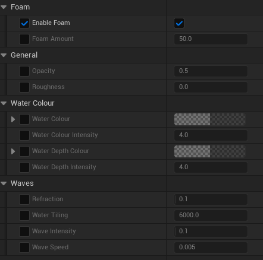

Twisted Guardians
 11
11
 36 Hours
36 Hours
 Unreal Engine
Unreal Engine
Starting Experience
Before working on this project I had little to no experience making shaders within Unreal, only having used shader nodes in Blender. But due to the similarity to blueprints I had confidence I could learn how, for this.
Produced Assets
The ice shader was the first thing I worked on, I experimented with normal maps and parallax, following some tutorials to create a convincing ice effect I was proud of.
The fireball was my first time using the Niagara particle system in Unreal Engine. It was a combination of multiple scrolling textures That spawn off each other in waves, to create an expanding fiery smoke effect as the ball arcs through the air.
This shader didn't make it into the final product, but I made a pulsing texture that is supposed to look as if it is crawling around the object it is on.
The footsteps were a cloud texture on a burst particle effect that was applied every step.
The dissolve effect was made re-using and improving the ice effect to be used as a shader function.

The water shader was the the most complex out of all of them. It has multiple variable features and settings. Including foam, speed, tiling, depth etc.
Learned Experience
I learned a huge amount about the creation of shaders, but especially about working in a large group. I gained experience completing given tasks by a manager and tracking my hours. I am a lot more confident in tackling shaders and particles, but also any new type of scripting I am unfamiliar with.